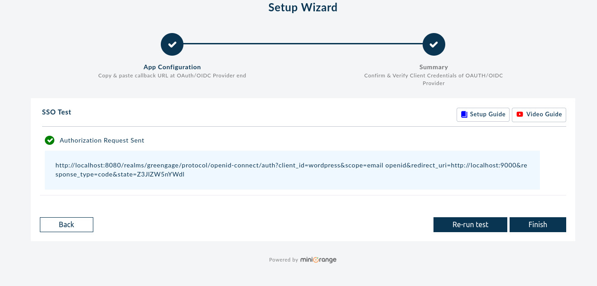
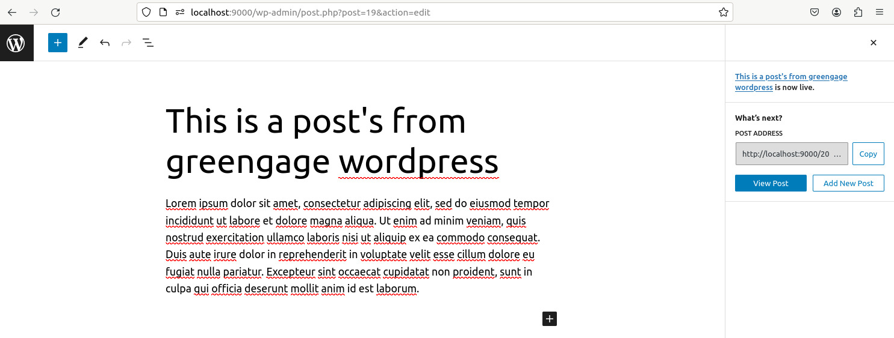
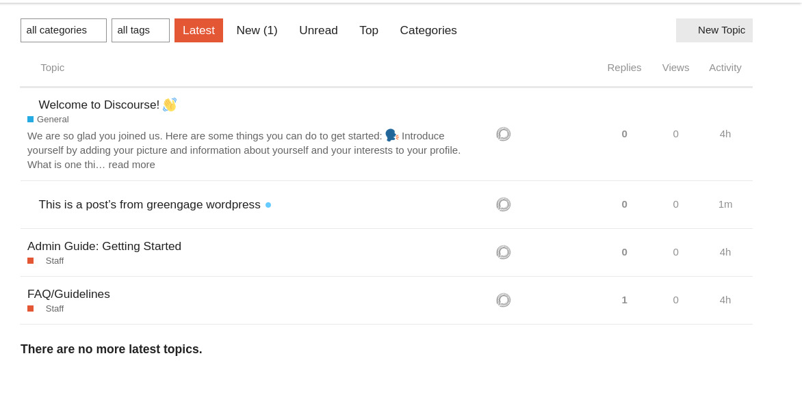
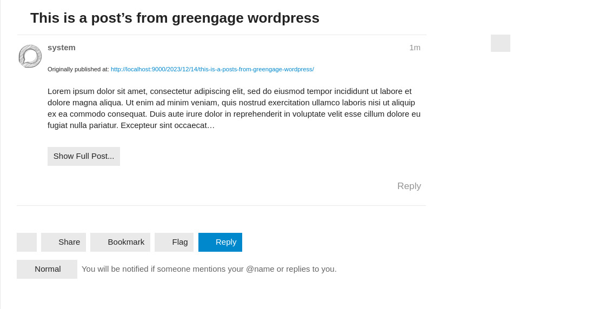

WordPress, Keycloak, and Discourse Integration Guide
Introduction
This guide details the process of deploying WordPress, Keycloak, and Discourse using Docker, and integrating them for a seamless user experience. This setup utilizes Keycloak for Single Sign-On (SSO) across WordPress and Discourse, enhancing security and streamlining user management.
Prerequisites
- Docker and Docker Compose installed.
- Familiarity with Docker, YAML syntax, and basic network configurations.
- Access to a SMTP service for email functionalities.
Docker Compose Configuration
The provided docker-compose.yml file outlines the configuration for deploying WordPress, Keycloak, and Discourse. The structure includes:
- WordPress Service: Utilizes the
bitnami/wordpressimage, configured for web content management. - MariaDB Service: A database for WordPress.
- Keycloak Database: PostgreSQL database dedicated to Keycloak.
- Keycloak Service: Manages SSO and user authentication.
- Discourse Services: Includes
postgresqldiscourse,redis,discourse, andsidekiqfor the forum platform.
Deploying the Services
-
Download or Clone the Docker Compose File: Obtain the provided docker-compose.yml.
-
Configure Environment Variables: Replace placeholders in the file with actual values for SMTP, database credentials, and other settings.
-
Run the Services:
-
Execute
docker-compose upin the directory containing the Docker Compose file. -
Access Services:
- WordPress: Accessible at
http://localhost:9000. - Discourse: Accessible at
http://localhost:3000. - Keycloak: Accessible at
http://localhost:8080.
Integrating Keycloak with WordPress and Discourse
WordPress + Keycloak
-
Install OAuth SSO Plugin in WordPress:
-
Access WordPress admin panel.
- Navigate to 'Plugins' > 'Add New'.
-
Search and install "OAuth Single Sign On – SSO (OAuth Client)".
-
Configure Keycloak Integration:
- Use Keycloak's
clientidandsecret. - Follow the setup wizard in WordPress for Keycloak integration.

Discourse + Keycloak
-
Enable Keycloak SSO in Discourse:
-
Access the Discourse container's command line.
-
Install the OpenID Connect plugin and configure it to use Keycloak as the SSO provider.
-
Configure API Key in Discourse:
- Generate an API key in Discourse admin panel for integration purposes.
WordPress + Discourse
-
Install WP Discourse Plugin in WordPress:
-
Access WordPress admin panel.
- Navigate to 'Plugins' > 'Add New'.
-
Search and install "WP Discourse".
-
Configure Discourse Integration:
- Use the Discourse API key.
- Set up publishing and commenting settings in WordPress to synchronize with Discourse.
Example of Post Integration from WordPress to Discourse
This example demonstrates the seamless integration of posting on WordPress and how it reflects on Discourse.
-
First, we create a post in WordPress. As soon as the post is published, it automatically generates a corresponding thread in Discourse.  
-
Now, the post made in WordPress can be viewed as a thread in Discourse.

- Additionally, users can engage with the post by commenting directly in the Discourse thread.

Additional Configuration and Troubleshooting
- Email Setup: Ensure SMTP settings are correctly configured in both WordPress and Discourse for email functionalities.
- Security and Data Backup: Regularly update services and back up data.
- Troubleshooting: Consult the official documentation of WordPress, Keycloak, and Discourse for specific issues.
Support and Additional Resources
- Community Forums: Engage with community forums for WordPress, Keycloak, and Discourse for support.
- External Documentation: Refer to the official documentation of each tool for detailed guides and updates.
Note: Always ensure that you are working with the latest versions of the software and following the best practices for security and maintenance.